Fase tres.En el aula.
La mayor parte de nosotro nos sentimos muy familiarizados con las redes sociales, como por ejemplo Facebook, Twitter, Instagram, Youtube, etc., en nuestra vida cotidiana como herramienta de uso personal. Sin embargo, pocos de nosotros se han atrevido a incluirlas como herramientas pedagógicas dentro del aula.
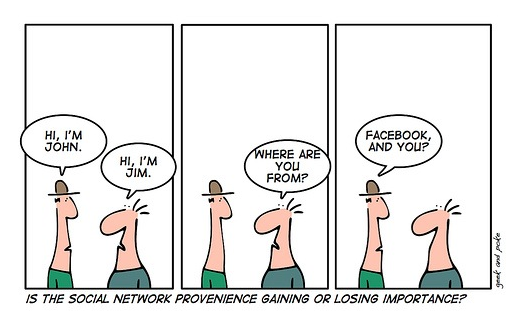
Realmente nos somos conscientes de las gran cantidad de ventajas que proporciona el hecho de integrar el uso de las redes sociales en nuestra práctica diaria con nuestro alumnado tanto en la elaboración de contenidos como en el desarrollo de actividades incrementando al mismo tiempo la creatividad, el interés por seguir aprendiendo, el trabajo colaborativo y mayor interacción entre la comunidad educativa.
A continuación os presento una serie de propuestas para que podáis llevar a la práctica con vuestros alumno:
Facebook:
Una de las primeras redes sociales que os propongo para trabajarla oración compuesta es Facebook. Para ello, debéis crear una cuenta en Facebook (esta red social ofrece la oportunidad de crear una página para tu clase) que deberéis proporcionar a vuestro alumnado el cual deberá DARLE A me gusta con el fin de que les avise cuando se realice alguna actividad en Facebook. Para ello, tendréis que configurar un grupo para cada clase con la que trabajéis estos contenidos. En el siguiente vídeo podéis ver cómo.
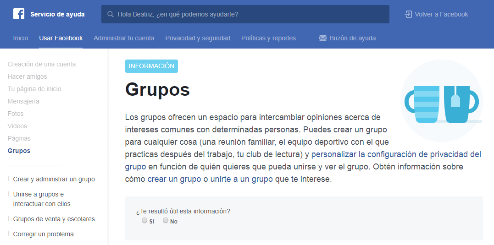
Esta red social incluye en la siguiente dirección información destinada a uso exclusivo por parte de profesores. Incluso han confeccionado un post donde se abordan cuestiones como son la seguridad y privacidad de nuestro alumnado al usar Facebook.
Así, os propongo Facebook para plantear distintos tipos de actividades para trabajar la oración compuesta mediante esta red social, las cuales tienen que ser realizadas por vuestros alumnos en Facebook y corregidas por vosotros, los docentes, dándole a un me gusta si la actividades está bien realizada o, por el contrario, indicando la posible corrección mediante un comentario al mensaje correspondiente.
Es decir, todas aquellas actividades que vosotros podríais pasar en soporte papel para trabajar la sintaxis de la oración compuesta, las proporcionáis mediante Facebook para que vuestros alumnos las realicen a través de esta red social. Así, la reflexión y los posibles debates que surjan se pueden trasladar más allá del aula.
Además, Facebook ofrece la posibilidad de incluir en el lateral pestañas que permiten introducir presentaciones interactivas para presentar contenidos didácticos, vuestro blog, vídeos de You tube, encuestas, etc. tal y como se explica Facebook en el siguiente enlace.
Gracias a Pinterest, podemos elaborar de modo visual una recopilación de todo aquel material presente en la red sobre la oración compuesta mediante la elaboración de un tablón de anuncios de carácter colaborativo y en línea. Además, ofrece la posibilidad de que el alumnado incorpore a dicho tablón sus trabajos.
Así, para trabajar con esta red social en clase, os aporto las siguiente ideas:
Confeccionar un tablón sobre distintos tipos de oraciones subordinadas, yuxtapuestas y coordinadas permitiendo que el alumnado coloque sus chinchetas con el análisis de esa oración, el reconocimiento del tipo de coordinada o subordinada y la función sintáctica que desempeña entre otras posibilidades.
Debatir sobre cuestiones acerca de la oración compuesta sobre las cuales el alumnado realice reseñas.
Así, en el siguiente vídeo se indica cómo poder elaborar vuestro propio tablero, agregar material, actividades etc.
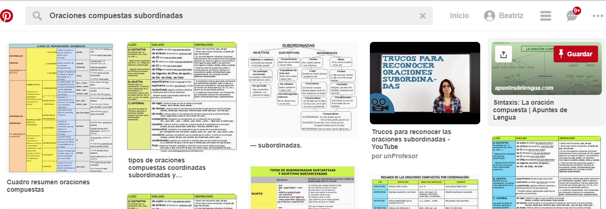
Para trabajar de forma innovadora y creativa la oración compuesta con la red social Twitter os traigo a colación dos opciones:
Primera opción
Para que nuestros alumnos puedan participar de esta actividad, deben haber creado una cuenta Twitter desde la cual, añadiendo a su mensaje el hashtag indicado por vosotros, tienen que escribir una oración yuxtapuesta, coordinada o subordinada a modo de cita (según el tipo que se esté estudiando en cada momento), confeccionada por ellos mismos o extraída de letras de canciones, libros etc. y contextualizada o relacionada con el día o la festividad que se desarrolla en ese momento en el que estéis trabajando la oración compuesta: día de la Paz, San Valentín , Navidad, Día contra la Violencia de Género etc.
Para ello, cada alumno la compartirá mediante un mensaje en Twitter señalando si es una oración coordinada, yuxtapuesta o subordinada al igual que su tipo dependiendo de la estructura sintáctica de su cita literaria. Así, además de compartir su cita, tendrán que darle a ´´me gusta´´ a la publicación por parte de otro compañero si considera que las oraciones construidas por sus compañeros son correctas y están bien identificada con el tipo de oración compuesta asignada o corregirla mediante una comentario en el caso de errónea.
A continuación, se les puede proponer elaborar carteles publicitarios acerca de las oraciones compuestas trabajadas en Twitter haciendo uso, por ejemplo, de las herramientas abordadas en el módulo anterior para confeccionar infografías y compartirlas en Twitter con el resto de sus compañeros. Del mismo modo, las pueden imprimir y realizar una exposición oral.
Así, os traigo un ejemplo de esta actividad llevada a la práctica por María Soriano García, trabajando las oraciones subordinadas adverbiales, en una Universidad bajo el título: SUBORDINADA CON AMOR.
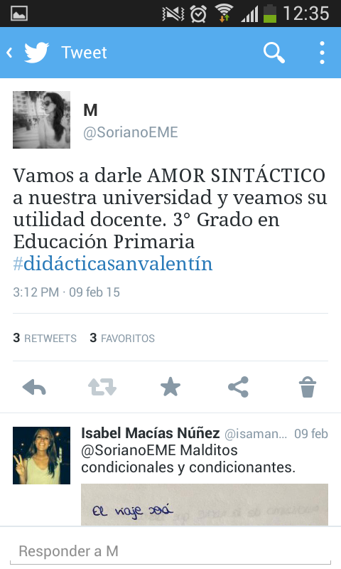 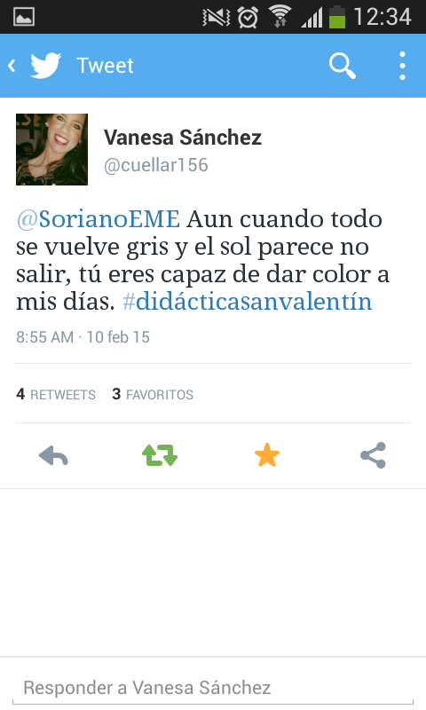 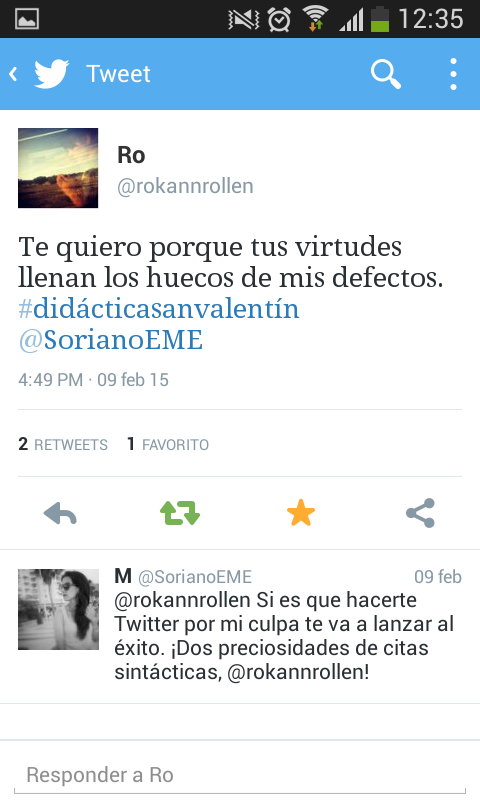
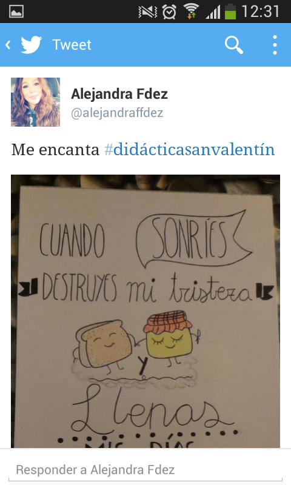
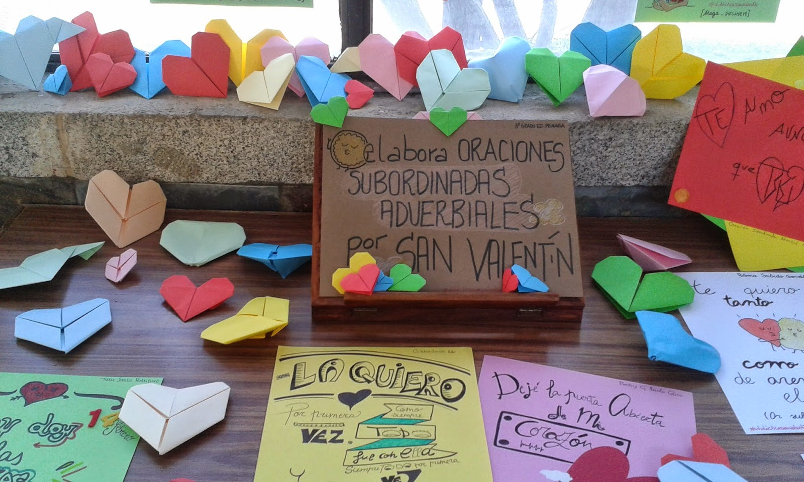
Segunda opción
De la misma manera, la profesora María P. Rodríguez propone a sus alumnos trabajar las oraciones coordinadas y las subordinadas sustantivas o Adjetivas de Relativo buscando ejemplos de las mismas en el Refranero español. Una vez seleccionado, anima a sus alumnos a compartirlo en Twitter incluyendo en una etiqueta el análisis #coordinada, #sustantiva, #relativo o #relsust (oraciones relativo sustantivada). De la misma manera, les propone usar como etiqueta final #RefránSintáctico.
María P. Rodríguez les indica que hagan el análisis en hoja de papel para, posteriormente, echarle una foto y colgarla en Twitter.
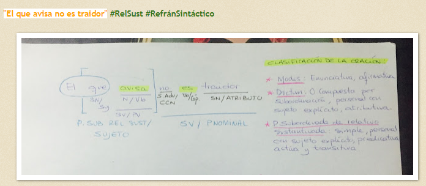
Sin embargo, yo les propondría a mis alumnos que elaborar su análisis sintáctico con las herramientas que vimos en el módulo dos, EDAS, y exportar la imagen de su análisis para, posteriormente, compartirlo en Twitter con el resto de sus compañeros.
Aunque, como os propongo ahora, existen otros analizadores sintácticos como son:
NEOBOOK.
El profesor José María Soler de Parla (Madrid) ha creado una aplicación confeccionada en Neobook con la pretensión de realizar un análisis sintáctico adoptando la forma de árbol jerarquerizado de forma racional.
Esta herramienta no corrige los análisis realizados pero sí proporciona un archivo final del análisis sintáctico realizado sobre el cual se puede trabajar por medio de un editor o procesador de texto.
Este programa os lo podéis descargar pinchando en el siguiente enlace. Para ello, únicamente TENÉIS QUE DESCOMPRIMIR el archivo y haced doble clic sobre el ejecutable.
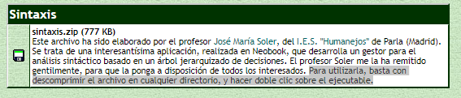
http://www.lenguaensecundaria.com/material/apuntes.shtml
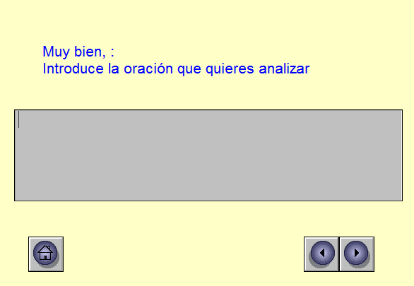 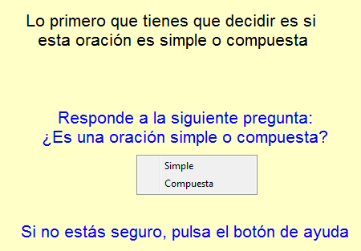 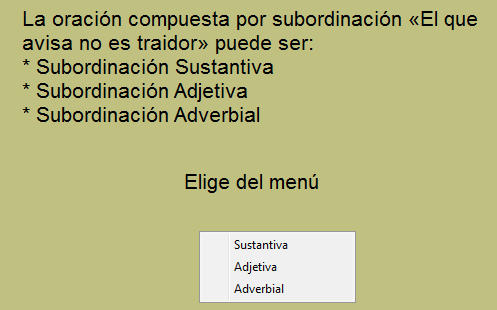
Además de elaborar una aplicación para realizar análisis sintácticos, Neobook permite elaborar aplicaciones para Windows de forma sencilla pudiendo insertar textos, gráficos, elaborar formularios sonidos y distintas animaciones. Para poder explotar todas las posibilidades que nos ofrece esta herramientas tecnológica, os proporciono el siguiente manual.
STYLUS
Por medio del analizador Stilus, debéis introducir la oración que queráis analizar y, a continuación, Stilus os proporciona tanto el análisis sintáctico de la oración correspondiente en forma de árbol como el análisis morfológico de cada una de las palabras que constituyen dicha oración.
Gracias a esta herramienta, los alumnos corregirán sus propios análisis sintácticos de modo interactivo siendo conscientes de sus errores sintácticos y favoreciendo, al mismo tiempo, la atención a la diversidad ya que el alumnado aprende según su propio ritmo.
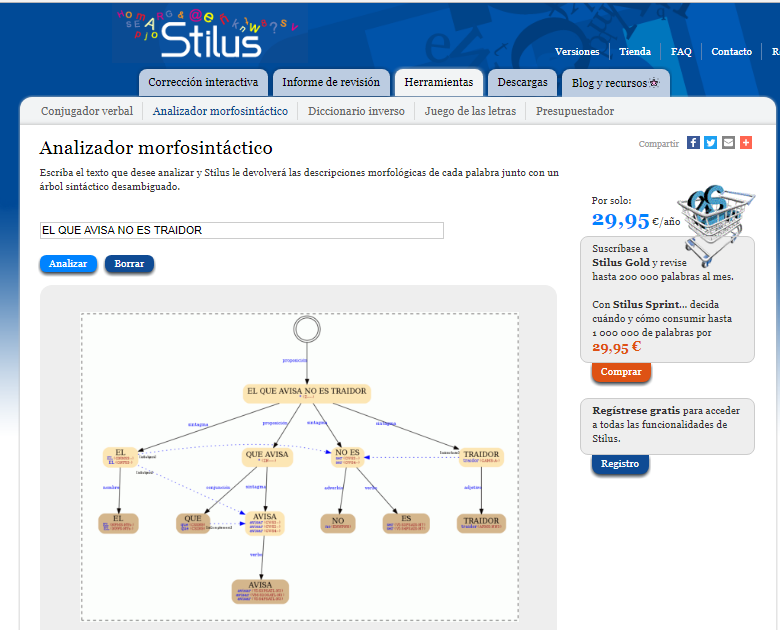
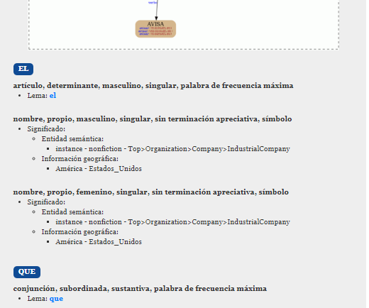
Tercera opción
Analizador Morfosintáctico Secundaria
Gracias a este analizador creado por Pilar García Moreno, se ofrece a los alumnos la opción de realizar un repaso de todos aquellos contenidos didácticos considerados como imprescindibles a la hora de poder realizar un análisis sintáctico con éxito.
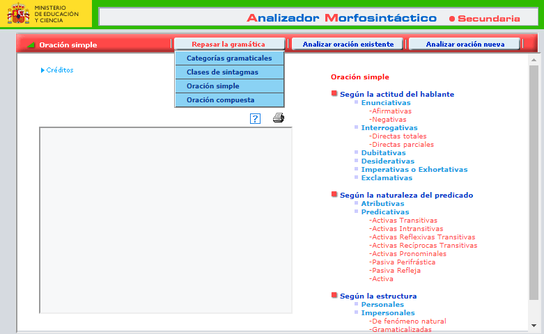
Así, el alumnado podrá:
- Analizar sintácticamente oraciones que se encuentran ya analizadas en el programa para poder ver cuáles son sus errores y así poder optar por el análisis de oraciones que le presenten mayor dificultad.
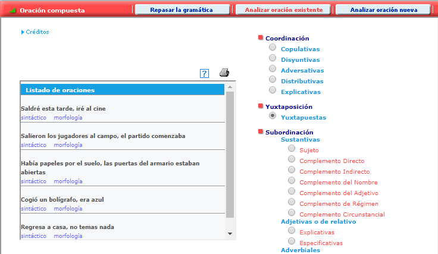
- Trabajar sobre oraciones que aporta al azar la propia aplicación.
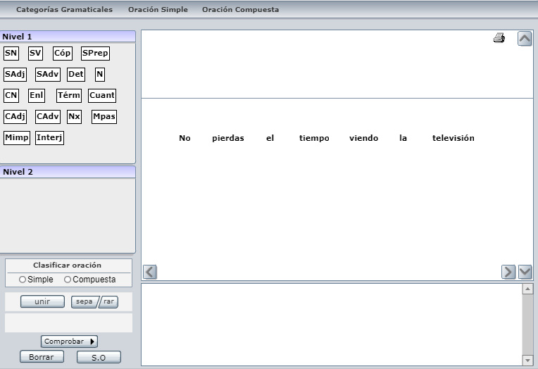
- Escribir directamente la oración sobre la que quiere trabajar. Para ello, se deberá activar la pestaña "analizar una oración nueva".
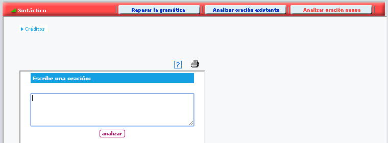
Como podéis observar, en las tres posibilidades ofrecidas, el alumno puede imprimir el análisis sintáctico realizado (icono de la impresora).
Os podéis descargar la aplicación en vuestro ordenador en el siguiente enlace.